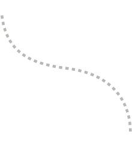
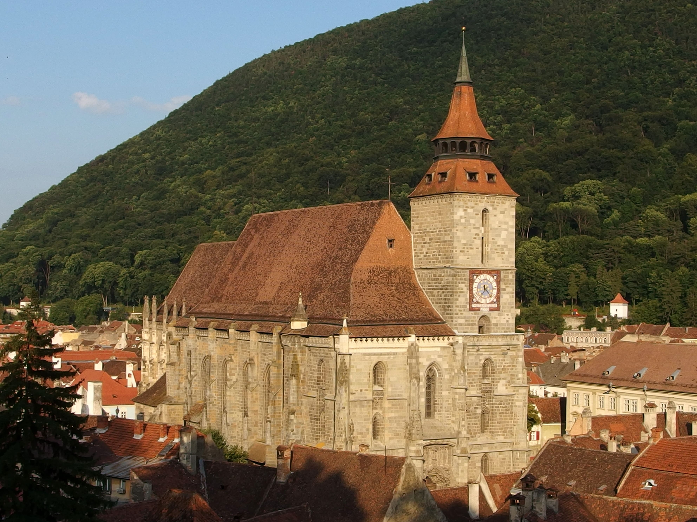
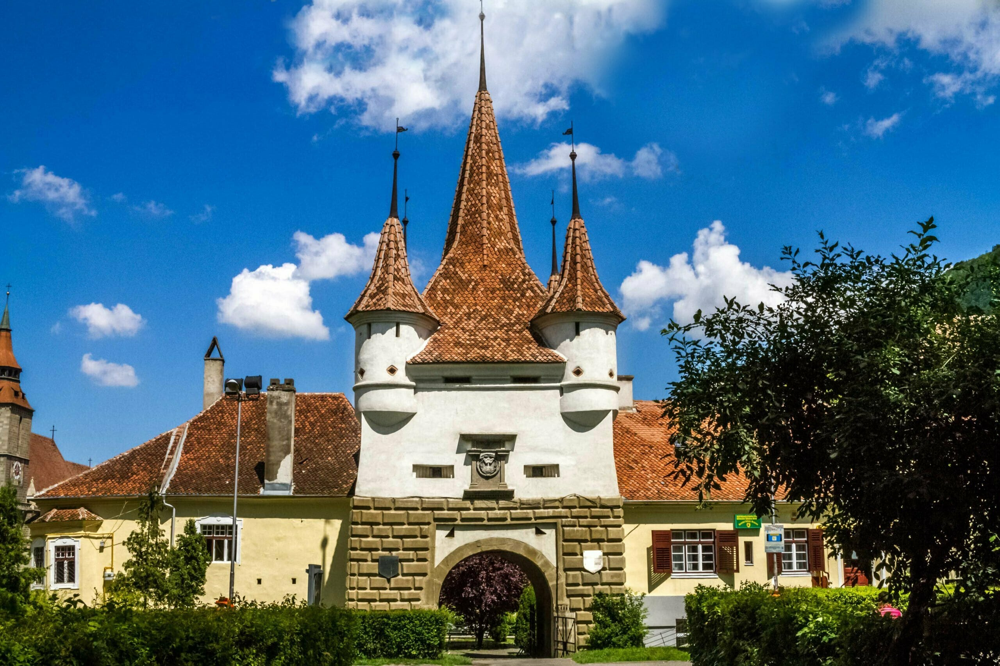
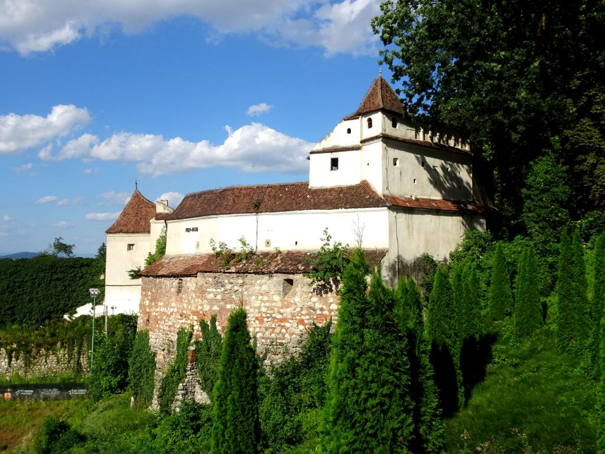
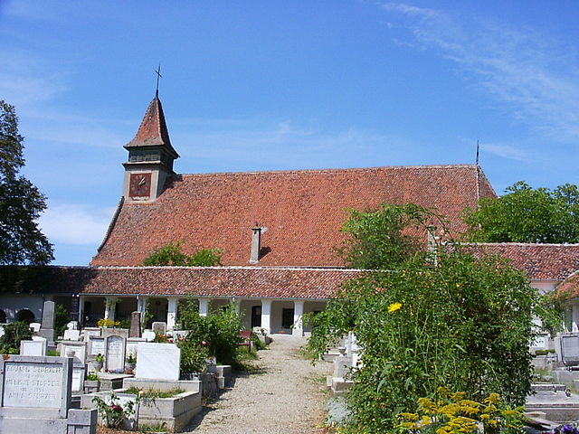

TREASURE HUNT
by Intercultural Marathon



Stroll through charming streets, admire historical sights, and feel the city’s vibrant spirit—no rush, just
footsteps, stories, and the joy of exploration!
Livada Postei
Start your journey here and step into the vibrant heart of Brașov’s marathon spirit.
Challenge: What year did Transilvania University open?
Piata Sfatului
Brașov’s lively main square, full of color, history, and perfect mountain views all around.
Challenge: Discover the old name of Brașov and its symbol illustrated on the museum in the center of the
square!
Biserica Neagră
A Gothic masterpiece rising tall—step close and feel the weight of Brașov’s grand past.
Challenge: Search and read the story about why the church is called the Black Church (‘Neagră’).

Poarta Ecaterinei
A fairytale gate with towers and charm, guarding tales from Brașov’s medieval days.
Challenge: Why are the gates called Ecaterina’s?

Bastionul Țesătorilor
Once a mighty fortress, now a quiet witness to the city’s defense and craft legacy.
Challenge: What is the width of the walls of this bastion?

Palatul Prefecturii
An elegant building of authority—its grand facade reflects Brașov’s civic pride and history.
Challenge: What architectural style is this building?
Primăria Brașov
The city’s administrative heart—classic, calm, and central to Brașov’s modern rhythm.
Challenge: What does the wolf in front of the building represent?
Biserica Sfântul Martin
One of Brașov’s oldest churches—hidden, quiet, and full of medieval soul and mystery.
Challenge: What is the construction date of this church?

Innovation Education Lab office!
The place where the Intercultural Marathon will take place!
Address: Strada Ion Ratiu 2
Congratulations!
You’ve reached the finish line! Take a breath, enjoy the view—Brașov’s story walks with you.
Follow Intercultural Marathon for more events!